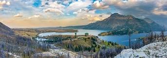
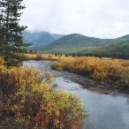
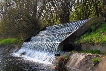
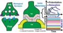
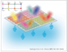
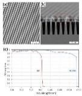

Status: Completed | Date: Oct-22
Affiliation: University of Waterloo
Impact of the Kenow wildfire on the form and mobility of particulate phosphorus in gravel-bed rivers...
Status: Completed | Date: Mar-22
Affiliation: University of Waterloo
Legacy of phosphorus bioavailability from cumulative watershed disturbance pressures, especially wildfire...
Status: Completed | Date: Dec-21
Affiliation: University of Waterloo
Advancing on the promises of techno-ecological nature-based solutions: A framework for green technology in water supply & treatment...
Status: Ongoing
Affiliation: University of Waterloo
Wetlands provide a range of environmental and societal benefits but small, isolated wetlands are often lost due to human activity...
Status: Ongoing | Date:
Affiliation: University of Waterloo
Status: Ongoing | Date:
Affiliation: University of Waterloo
Entangled photon sources are crucial for quantum computing, quantum sensing, and quantum communication.
Status: Ongoing | Date:
Affiliation: University of Waterloo
As part of an effort to improve quantum sensing, we are developing new semiconductor p-n junctions and designing novel nanowire arrays.